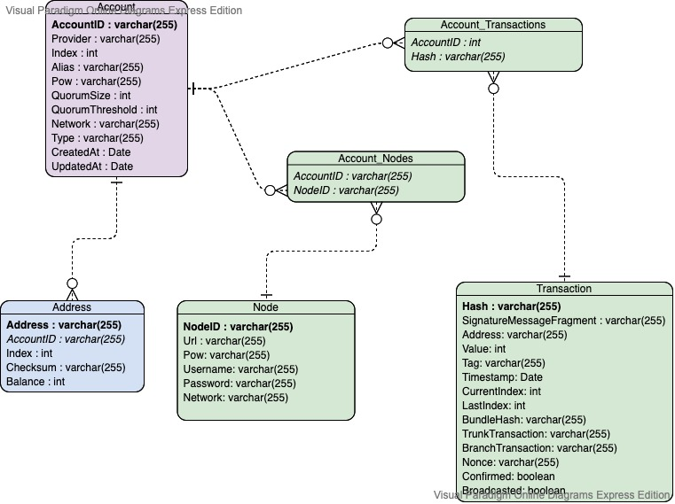

Welcome
This is the documentation for the official IOTA Wallet Library Software. It can be used to easily intgrate an IOTA Wallet into your application.
Warning
This library is in active development. The library targets the Chrysalis testnet and does not work with current IOTA mainnet.
Chrysalis Testnet
To join the Chrysalis public testnet checkout this link.
Joining the discussion
If you want to get involved in discussions about this library, or you're looking for support, go to the #clients-discussion channel on Discord.
What you will find here
This documentation has five paths.
- The Overview, an detailed overview of the wallet library.
- Libraries, all avaiable programming languages and their resources.
- The Specification, detailed explaination requirements and functionality.
- Contribute, how you can work on the wallet software.
- Get in touch, join the community and become part of the X-Team!
Overview
The wallet library is a stateful package with a standardised interface for developers to build applications involving IOTA value transactions. It offers abstractions to handle IOTA payments and can optionally interact with IOTA Stronghold for seed handling, seed storage and state backup. Alternatively you can use the EnvMnemonic SignerType and a SQLite database. See the full specification here.

IOTA Wallet libraries
We currently support the following libraries:
IOTA Wallet Rust Library

Warning
This library is in active development. The library targets the Chrysalis testnet and does not work with current IOTA mainnet.
Joining the discussion
If you want to get involved in discussions about this library, or you're looking for support, go to the #clients-discussion channel on Discord.
Overview
Getting Started with Rust
Prerequisites
Rust and Cargo are required. Install them here.
We recommend you update Rust to the latest stable version rustup update stable. Nightly should be fine but there's a chance some changes are not compatible.
no_std is not supported currently, but we are working on it, and will provide it as a feature once the new implementation is ready.
Dependencies
cmake and openssl are required. In order to run the build process succesfully using Cargo you might need install additional build tools on your system.
Windows
cmake can be downloaded on the official website and openssl can be installed with vcpkg or chocolatey.
- Installing
opensslwithvcpkg:
$ ./vcpkg.exe install openssl:x64-windows
$ ./vcpkg.exe integrate install
# you may want to add this to the system environment variables since you'll need it to compile the crate
$ set VCPKGRS_DYNAMIC=1
- Installing
opensslwithchocolatey:
$ choco install openssl
# you may need to set the OPENSSL_ROOT_DIR environment variable
$ set OPENSSL_ROOT_DIR="C:\Program Files\OpenSSL-Win64"
macOS
cmake and openssl can be installed with Homebrew:
$ brew install cmake
$ brew install openssl@1.1
# you may want to add this to your .zshrc or .bashrc since you'll need it to compile the crate
$ OPENSSL_ROOT_DIR=$(brew --prefix openssl@1.1)
Linux
Install cmake and openssl with your distro's package manager or download from their websites. On Debian and Ubuntu you will also need build-essential.
Usage
To use the library, add this to your Cargo.toml:
[dependencies]
iota-wallet = { git = "https://github.com/iotaledger/wallet.rs" }
Initialisation
In order to use the library you first need to create an AccountManager:
use iota_wallet::{ account_manager::AccountManager, client::ClientOptionsBuilder, signing::SignerType, storage::sqlite::SqliteStorageAdapter, }; use std::path::PathBuf; #[tokio::main] async fn main() -> iota_wallet::Result<()> { let storage_folder: PathBuf = "./my-db".into(); let manager = AccountManager::builder() .with_storage(&storage_folder, SqliteStorageAdapter::new(&storage_folder, "accounts")?) .finish() .await?; let client_options = ClientOptionsBuilder::new().with_node("http://api.lb-0.testnet.chrysalis2.com")?.build(); let account = manager .create_account(client_options) .signer_type(SignerType::EnvMnemonic) .initialise() .await?; Ok(()) }
Examples
You can see the examples in the examples directory and try them with:
cargo run --example # lists the available examples
cargo run --example transfer # execute the `transfer` example
Backup and restore example
Create an account manager and set an password:
#![allow(unused)] fn main() { let mut manager = AccountManager::builder().finish().await.unwrap(); manager.set_stronghold_password("password").await.unwrap(); manager.store_mnemonic(SignerType::Stronghold, None).await.unwrap(); }
Create your account:
#![allow(unused)] fn main() { let client_options = ClientOptionsBuilder::new() .with_node("https://api.lb-0.testnet.chrysalis2.com")? .build() .unwrap(); let account_handle = manager .create_account(client_options)? .alias("alias") .initialise() .await?; let id = account_handle.id().await; }
Now you can secure your account in a backup file:
#![allow(unused)] fn main() { // backup the stored accounts to ./backup/${backup_name} let backup_path = manager.backup("./backup").await?; }
You can import the backup later or by another application like here:
#![allow(unused)] fn main() { manager.import_accounts(backup_path, "password").await?; let imported_account_handle = manager.get_account(&id).await?; let account = account_handle.read().await; let imported_account = imported_account_handle.read().await; }
That's it! Now you know, how do backup and restore your account!
See the full example here
API Reference
Link to hosted api documentation: TODO
If you'd like to explore the implementation in more depth, the following command generates docs for the whole crate:
cargo doc --document-private-items --no-deps --open
Troubleshooting
StackExchange
The IOTA StackExchange a a nice Tool for developers to find Answers for a problem. Just search your problem and find your answer! If there is no one, submit your question and share it in the discussion channel below.
Joining the discussion
If you want to get involved in discussions about this library, or you're looking for support, go to the #clients-discussion channel on Discord.
IOTA Wallet Node.js Library

Warning
This library is in active development. The library targets the Chrysalis testnet and does not work with current IOTA mainnet.
Joining the discussion
If you want to get involved in discussions about this library, or you're looking for support, go to the #clients-discussion channel on Discord.
Overview
Getting Started with Node.js
The IOTA Wallet Node.js binding is published on npmjs.org.
Installation
Currently the package isn't published so you'd need to link it to your project using npm or yarn.
- Using NPM:
$ npm install @iota/wallet
- Using yarn:
$ yarn install @iota/wallet
Usage
/**
* This example creates a new database and account
*/
require('dotenv').config()
async function run() {
const { AccountManager, SignerType } = require('@iota/wallet')
const manager = new AccountManager({
storagePath: './alice-database',
})
manager.setStrongholdPassword(process.env.SH_PASSWORD)
manager.storeMnemonic(SignerType.Stronghold)
const account = await manager.createAccount({
clientOptions: { node: "https://api.lb-0.testnet.chrysalis2.com", localPow: true },
alias: 'Alice',
})
console.log('Account created:', account.alias())
}
run()
Examples
There are several examples to show the usage of the library.
All examples can be found in /bindings/nodejs/examples
Setup
First, setup your environment as follows:
git clone https://github.com/iotaledger/wallet.rs
cd bindings/node/examples
npm install # or `yarn`
cp .env.example .env
Add your custom password to the .env file.
1. Example: Create an Account
Run:
node 1-create-account.js
Code:
/**
* This example creates a new database and account
*/
require('dotenv').config()
async function run() {
const { AccountManager, SignerType } = require('@iota/wallet')
const manager = new AccountManager({
storagePath: './alice-database',
})
manager.setStrongholdPassword(process.env.SH_PASSWORD)
manager.storeMnemonic(SignerType.Stronghold)
const account = await manager.createAccount({
clientOptions: { node: "https://api.lb-0.testnet.chrysalis2.com", localPow: true },
alias: 'Alice',
})
console.log('Account created:', account.alias())
}
run()
2. Generate Address
Run:
node 2-generate-address.js
Code:
/**
* This example genrates a new address.
*/
require('dotenv').config()
async function run() {
const { AccountManager, StorageType } = require('@iota/wallet')
const manager = new AccountManager({
storagePath: './alice-database',
storageType: StorageType.Stronghold
})
manager.setStrongholdPassword(process.env.SH_PASSWORD)
const account = manager.getAccount('Alice')
console.log('Account:', account.alias())
// Always sync before doing anything with the account
const synced = await account.sync()
console.log('Syncing...')
const { address } = account.generateAddress()
console.log('New address:', address)
// You can also get the latest unused address:
// const addressObject = account.latestAddress()
// console.log("Address:", addressObject.address)
// Use the Chrysalis Faucet to send testnet tokens to your address:
console.log("Fill your address with the Faucet: https://faucet.testnet.chrysalis2.com/")
}
run()
3. Example: Check Balance
Run:
node 3-check_balance
Code:
/**
* This example creates a new database and account
*/
require('dotenv').config()
async function run() {
const { AccountManager, StorageType } = require('@iota/wallet')
const manager = new AccountManager({
storagePath: './alice-database',
storageType: StorageType.Stronghold
})
manager.setStrongholdPassword(process.env.SH_PASSWORD)
const account = manager.getAccount('Alice')
console.log('Account:', account.alias())
// Always sync before doing anything with the account
const synced = await account.sync()
console.log('Syncing...')
console.log('Available balance', account.balance().available)
}
run()
4. Example: Check Balance
Now you can send the test tokens to an address!
Run
node 4-send.js
Code:
/**
* This example sends IOTA Toens to an address.
*/
require('dotenv').config();
async function run() {
const { AccountManager, StorageType } = require('@iota/wallet')
const manager = new AccountManager({
storagePath: './alice-database',
storageType: StorageType.Stronghold
})
manager.setStrongholdPassword(process.env.SH_PASSWORD)
const account = manager.getAccount('Alice')
console.log('alias', account.alias())
console.log('syncing...')
const synced = await account.sync()
console.log('available balance', account.balance().available)
//TODO: Replace with the address of your choice!
const addr = 'atoi1qykf7rrdjzhgynfkw6z7360avhaaywf5a4vtyvvk6a06gcv5y7sksu7n5cs'
const amount = 10000000
const node_response = await synced.send(
addr,
amount
)
console.log(`Check your message on https://explorer.iota.org/chrysalis/message/${node_response.id}`)
}
run()
5. Backup
Run
node 5-backup.js
Code:
/**
* This example backups your data in a secure file.
* You can move this file to another app or device and restore it.
*/
require('dotenv').config();
async function run() {
const { AccountManager, StorageType } = require('@iota/wallet')
const manager = new AccountManager({
storagePath: './alice-database',
storageType: StorageType.Stronghold
})
manager.setStrongholdPassword(process.env.SH_PASSWORD)
let backup_path = await manager.backup("./backup")
console.log('Backup path:', backup_path)
}
run()
6. Restore
Run
node 6-restore.js
Code:
/**
* This example restores a secured backup file.
*/
require('dotenv').config();
async function run() {
const { AccountManager, StorageType } = require('@iota/wallet')
const manager = new AccountManager({
storagePath: './alice-database',
storageType: StorageType.Stronghold
})
// Add the path to the file from example 5-backup.js
// for example: ./backup/2021-02-12T01-23-11-iota-wallet-backup-wallet.stronghold
let backup_path = "input your backup file"
await manager.importAccounts(backup_path, process.env.SH_PASSWORD)
const account = manager.getAccount('Alice')
console.log('Account:', account.alias())
}
run()
7. Events
Run
node 7-events.js
Code:
{{ #include ../../../bindings/nodejs/examples/7-eveents.js }}
API Reference
initLogger(config: LogOptions)
Initializes the logging system.
LogOptions
| Param | Type | Default | Description |
|---|---|---|---|
| color_enabled | boolean | undefined | Whether to enable colored output or not |
| outputs | LogOutput[] | undefined | The log outputs |
LogOutput
| Param | Type | Default | Description |
|---|---|---|---|
| name | string | undefined | 'stdout' or a path to a file |
| level_filter | string | 'info' | The maximum log level that this output accepts |
| target_filters | string[] | [] | Filters on the log target (library and module names) |
addEventListener(event, cb)
Adds a new event listener with a callback in the form of (err, data) => {}.
Supported event names:
- ErrorThrown
- BalanceChange
- NewTransaction
- ConfirmationStateChange
- Reattachment
- Broadcast
AccountManager
constructor([options])
Creates a new instance of the AccountManager.
| Param | Type | Default | Description |
|---|---|---|---|
| [options] | object | undefined | The options to configure the account manager |
| [storagePath] | string | undefined | The path where the database file will be saved |
| [storageType] | number | undefined | The type of the database. Stronghold = 1, Sqlite = 2 |
setStrongholdPassword(password): void
Sets the stronghold password and initialises it.
| Param | Type | Default | Description |
|---|---|---|---|
| password | string | undefined | The stronghold snapshot password |
changeStrongholdPassword(currentPassword, newPassword): void
Changes the stronghold password.
| Param | Type | Default | Description |
|---|---|---|---|
| currentPassword | string | undefined | The current stronghold password |
| newPassword | string | undefined | The new stronghold password |
createAccount(account): Account
Creates a new account.
| Param | Type | Default | Description |
|---|---|---|---|
| account | object | {} | The account to be created |
| account.clientOptions | ClientOptions | undefined | The node configuration |
| [account.mnemonic] | string | undefined | The account BIP39 mnemonic |
| [account.alias] | string | Account ${index + 1} | The account alias |
| [account.createdAt] | string | the current date and time | The ISO 8601 date string of the account creation |
| [account.signerType] | number | 1 = Stronghold | The account signer type. 1 = Stronghold, 2 = EnvMnemonic |
getAccount(accountId)
Gets the account with the given identifier or index.
| Param | Type | Default | Description |
|---|---|---|---|
| accountId | string | number | null | The account identifier or account index |
Returns the associated Account instance or undefined if the account wasn't found.
getAccountByAlias(alias)
Gets the account with the given alias (case insensitive).
| Param | Type | Default | Description |
|---|---|---|---|
| alias | string | null | The account alias |
Returns the associated Account instance or undefined if the account wasn't found.
getAccounts()
Gets all stored accounts.
Returns an array of Account objects.
removeAccount(accountId)
Removes the account with the given identifier or index.
| Param | Type | Default | Description |
|---|---|---|---|
| accountId | string | number | null | The account identifier or account index |
syncAccounts([options])
Synchronize all stored accounts with the Tangle.
| Param | Type | Default | Description |
|---|---|---|---|
| [options] | object | {} | The sync options |
| [options.addressIndex] | number | latest address index | The index of the first account address to sync |
| [options.gapLimit] | number | 10 | The number of addresses to check on each account sync |
Returns A promise resolving to an array of SyncedAccount.
internalTransfer(fromAccount, toAccount, amount)
Transfers an amount from one subaccount to another.
| Param | Type | Default | Description |
|---|---|---|---|
| fromAccount | Account | null | The source account |
| toAccount | Account | null | The destination account |
| amount | number | undefined | The transfer amount |
Returns A promise resolving to the transfer's Message.
backup(destination)
Backups the database.
| Param | Type | Default | Description |
|---|---|---|---|
| destination | string | undefined | The path to the backup file |
Returns The full path to the backup file.
importAccounts(source)
Imports a database file.
| Param | Type | Default | Description |
|---|---|---|---|
| source | string | undefined | The path to the backup file |
| password | string | undefined | The backup stronghold password |
isLatestAddressUnused()
Determines whether all accounts has unused latest address after syncing with the Tangle.
Returns A promise resolving to the boolean value.
setClientOptions(options)
Updates the client options for all accounts.
| Param | Type | Default | Description |
|---|---|---|---|
| options | ClientOptions | null | The new account client options |
SyncedAccount
send(address, amount[, options])
Send funds to the given address.
| Param | Type | Default | Description |
|---|---|---|---|
| address | string | null | The bech32 string of the transfer address |
| amount | number | undefined | The transfer amount |
| options | TransferOptions | undefined | The transfer options |
TransferOptions
| Param | Type | Default | Description |
|---|---|---|---|
| remainderValueStrategy | RemainderValueStrategy | null | The strategy to use for the remainder value if any |
| indexation | { index: string, data?: Uint8Array } | null | Message indexation |
RemainderValueStrategy
changeAddress()
Send the remainder value to an internal address.
reuseAddress()
Send the remainder value to its original address.
accountAddress(address: string)
Send the remainder value to a specific address that must belong to the account.
retry(messageId)
Retries (promotes or reattaches) the given message.
| Param | Type | Default | Description |
|---|---|---|---|
| messageId | string | null | The message's identifier |
reattach(messageId)
Reattach the given message.
| Param | Type | Default | Description |
|---|---|---|---|
| messageId | string | null | The message's identifier |
promote(messageId)
Promote the given message.
| Param | Type | Default | Description |
|---|---|---|---|
| messageId | string | null | The message's identifier |
Account
id()
Returns the account's identifier.
index()
Returns the account's index.
alias()
Returns the account's alias.
balance(): AccountBalance
Returns the account's balance information object.
Balance object: { total: number, available: number, incoming: number, outgoing: number }
messageCount([type])
Returns the number of messages associated with the account.
| Param | Type | Default | Description |
|---|---|---|---|
| [type] | number | null | The message type filter (Received = 1, Sent = 2, Failed = 3, Unconfirmed = 4, Value = 5) |
listMessages([count, from, type])
Returns the account's messages.
| Param | Type | Default | Description |
|---|---|---|---|
| [count] | number | 0 | The number of messages to return (0 to return all) |
| [skip] | number | 0 | The number of messages to skip |
| [type] | number | null | The message type filter (Received = 1, Sent = 2, Failed = 3, Unconfirmed = 4, Value = 5) |
Message object: { confirmed: boolean, broadcasted: boolean, incoming: boolean, value: number }
listAddresses([unspent])
Returns the account's addresses.
| Param | Type | Default | Description |
|---|---|---|---|
| [unspent] | boolean | null | The unspent status filter |
Address object: { address: string, balance: number, keyIndex: number }
sync([options])
Synchronizes the account with the Tangle.
| Param | Type | Default | Description |
|---|---|---|---|
| [options] | object | {} | The sync options |
| [options.addressIndex] | number | latest address index | The index of the first address to sync |
| [options.gapLimit] | number | 10 | The number of addresses to check |
Returns a SyncedAccount instance.
isLatestAddressUnused()
Determines whether the account has unused latest address after syncing with the Tangle.
Returns A promise resolving to the boolean value.
setAlias(alias)
Updates the account alias.
| Param | Type | Default | Description |
|---|---|---|---|
| alias | string | null | The new account alias |
setClientOptions(options)
Updates the account client options.
| Param | Type | Default | Description |
|---|---|---|---|
| options | ClientOptions | null | The new account client options |
getMessage(messageId)
Gets the message associated with the given identifier.
| Param | Type | Default | Description |
|---|---|---|---|
| messageId | string | null | The message's identifier |
getAddress(addressBech32)
Gets the address object by its bech32 representation.
| Param | Type | Default | Description |
|---|---|---|---|
| addressBech32 | string | null | The address bech32 representation |
generateAddress()
Generates a new unused address and returns it.
latestAddress()
Returns the latest address (the one with the biggest keyIndex).
getUnusedAddress()
Synchronizes the account addresses with the Tangle and returns the latest address in the account, which is an address without balance.
ClientOptions
| Field | Type | Default | Description |
|---|---|---|---|
| [network] | number | undefined | The tangle network to connect to (Mainnet = 1, Devnet = 1, Comnet = 3) |
| [node] | string | undefined | A node URL to connect to |
| [nodes] | string[] | undefined | A list node URL to connect to |
| [quorumSize] | number | undefined | If multiple nodes are provided, quorum size determines the number of nodes to query to check for quorum. |
| [quorumThreshold] | number | undefined | Minimum number of nodes from the quorum pool that need to agree to consider a result true. |
| [localPow] | boolean | true | Whether to use local or remote PoW. |
Troubleshooting
StackExchange
The IOTA StackExchange a a nice Tool for developers to find Answers for a problem. Just search your problem and find your answer! If there is no one, submit your question and share it in the discussion channel below.
Joining the discussion
If you want to get involved in discussions about this library, or you're looking for support, go to the #clients-discussion channel on Discord.
Wallet Library Spec
Table of Contents
- Wallet Library Spec
- Introduction
- Considerations
- Naming Conventions
- Interfaces
- AccountConfiguration
- AccountObject
- SyncedAccountObject
- AccountManagerObject
- Address
- Node
- Timestamp
- Transfer
- Value
- Input
- OutputAddress
- Output
- UnsignedDataPayload
- SignedDataPayload
- IndexationPayload
- UnsignedTransaction
- WOTSSignature
- Ed25519Signature
- SignatureUnblockBlock
- ReferenceUnblockBlock
- SignedTransactionPayload
- Message
- StorageAdapter
- Storage
- Storage Adapter
- Account
- API
- Initialisation
- sync_addresses()
- sync_messages()
- select_inputs()
- send()
- retry()
- sync()
- reattach()
- total_balance()
- available_balance()
- set_alias()
- list_messages()
- list_received_messages()
- list_sent_messages()
- list_failed_messages()
- list_unconfirmed_messages()
- get_message()
- list_addresses()
- list_unspent_addresses()
- generate_address()
- API
- Account Manager
- Events
- Privacy
- Input Selection
- Account Syncing Process
- Polling
Introduction
The wallet library is a stateful package with a standardised interface to build applications with IOTA value transactions. The package will be compatible with different platforms such as web, desktop and mobile.
The package introduces the concept of an account. An account is a reference or a label to a seed. An account has certain properties such as addresses and messages. An account has various possible behaviours, including moving funds, looking for new messages, and making copies of message histories. An account should also be able to provide a degree of financial privacy and this should not incur any overhead.
A similar package was previously developed but this becomes obsolete with the introduction of Ed25519 signatures. The previous account package was limited to a single account. As an improvement, the (new) package will be able to manage multiple accounts.
To summarize, the main motivation behind this package is to offer a simplified (stateful) approach to handle IOTA payments.
Considerations
- Seeds should be stored and managed separately in a secure enclave and should never leave the secure environment. Secure enclaves include software enclaves such as IOTAs Rust-based Stronghold library or hardware enclaves such as a Ledger Nano;
- The secure enclave should have the ability to generate addresses and sign messages upon receipt of a message, and return the output in a message. If the secure enclave is initialised with a pre-generated seed, the sender process should immediately remove the seed traces from memory.
Naming Conventions
The primary language is Rust. Therefore, standard Rust naming conventions are followed. All interfaces (types) use CamelCase while all function and variable names use snake_case.
Interfaces
AccountConfiguration
Account configuration or initialization object. It should support parameters accepted by high level client libraries.
| Property | Required | Type | Description |
| seed | ✘ | string | BIP-39 mnemonic. When importing an account from Stronghold backup, the seed will not be required. |
| id | ✘ | string | SHA-256 hash of the first address on the seed (m/44'/0'/0'/0'/0'). Required for referencing a seed in Stronghold. The id should be provided by Stronghold. |
| index | ✔ | number | Account index in BIP-44 derivation path. |
| alias | ✘ | string | Account name. If not provided, Account + ${index} should be used. When importing an account from Stronghold backup, the alias will be required from Stronghold. |
| pow | ✘ | local | remote |
Proof of work settings. Defaults to local.
|
| nodes | ✔ | node[] | A list of nodes to connect to. |
| quorum_size | ✘ | number | If multiple nodes are provided, quorum size determines the number of nodes to query to check for quorum. |
| quorum_threshold | ✘ | number | Minimum number of nodes from the quorum pool that need to agree to consider a result true. |
| network | ✘ | mainnet | devnet | comnet | IOTA public network. |
| type | ✘ | default | ledger | Account type. Required for differentiating ledger vs non-ledger accounts. |
| provider | ✘ | string | Node URL. |
| created_at | ✘ | Date | Time of account creation. |
| messages | ✘ | Message[] | Messages associated with account. Accounts can be initialised with locally stored messages. |
| addresses | ✘ | Address[] | Address history associated with the account. Accounts can be initialised with locally stored address history. |
AccountObject
| Property | Required | Type | Description |
| id | ✔ | string | SHA-256 hash of the first address on the seed (m/44'/0'/0'/0/0). Required for referencing a seed in Stronghold. |
| alias | ✔ | string | Account name. |
| created_at | ✔ | number | Account creation time. |
| last_synced_at | ✔ | string | Time the account was last synced with the Tangle. |
| sync() | ✔ | function | Syncs account with the Tangle. |
| reattach() | ✔ | function | Reattaches unconfirmed transaction to the Tangle. |
| total_balance() | ✔ | function | Gets total account balance. |
| available_balance() | ✔ | function | Gets available account balance. |
| set_alias() | ✔ | function | Updates account name. |
| list_messages() | ✔ | function | Gets messages. |
| list_received_messages() | ✔ | function | Gets all received messages. |
| list_sent_messages() | ✔ | function | Gets all sent messages. |
| list_failed_messages() | ✔ | function | Gets all failed messages. |
| list_unconfirmed_messages() | ✔ | function | Gets all unconfirmed messages. |
| get_message() | ✔ | function | Gets message for provided id. |
| list_addresses() | ✔ | function | Gets all addresses. |
| list_unspent_addresses() | ✔ | function | Gets all unspent input addresses. |
| generate_address() | ✔ | function | Gets the latest unused address. |
SyncedAccountObject
| Property | Required | Type | Description |
| deposit_address | ✔ | Address | Deposit address. Only exposed on successful completion of account syncing process. |
| send() | ✔ | function | Send transaction method. Only exposed on successful completion of account syncing process. |
| retry() | ✔ | function | Rebroadcasts failed transaction. Only exposed on successful completion of account syncing process. |
AccountManagerObject
| Property | Required | Type | Description |
| accounts | ✔ | Account[] | Account objects. |
| add_account() | ✔ | function | Adds a new account. |
| remove_account() | ✔ | function | Removes an account. |
| sync_accounts() | ✔ | function | Syncs all stored accounts with the Tangle. |
| move() | ✔ | function | Inititates an internal transaction between accounts. |
| backup() | ✔ | function | Creates a backup to a provided destination. |
| import_accounts() | ✔ | function | Imports backed up accounts. |
| get_account() | ✔ | function | Returns the account associated with the provided address. |
| reattach() | ✔ | function | Reattaches an unconfirmed transaction. |
Address
Useful reference for address management in Hierarchical Deterministic (HD) wallets.
Note: The library only supports Ed25519 addresses. Therefore a type property for distinguishing between WOTS and Ed25519 addresses is unncecessary.
| Property | Required | Type | Description |
| address | ✔ | string | Address (Bech32) string. |
| balance | ✔ | number | Address balance. |
| index | ✔ | number | Address index. |
| internal | ✔ | boolean | Determines if an address is a public or an internal (change) address. See the concept of chain node for more details. |
| checksum | ✔ | string | Address checksum. |
Node
| Property | Required | Type | Description |
| url | ✔ | string | Node URL. |
| pow | ✔ | boolean | Determines if the node accepts proof of work. |
| username | ✘ | string | Node username. Only required if node requires authorisation. |
| password | ✘ | string | Node password. Only required if node requires authorisation. |
| network | ✔ | mainnet | devnet | comnet | IOTA public network name. |
Timestamp
| Property | Required | Type | Description |
| format(type: string):string | ✔ | function | Transaction timestamp in various formats. For example: MM-DD-YYYY, DD MM YYYY hh:mm:ss. |
Transfer
Transfer object required for creating a transaction. It allows end-users to specify the transaction amount and recipient address.
Note: Currently, it is not possible to send multiple payloads as part of the message. That is why tag property is omitted from this interface. See this for details.
| Property | Required | Type | Description |
| amount | ✔ | number | Transfer amount. |
| address | ✔ | string | Transfer address. |
| indexation_key | ✘ | Indexation Payload | (Optional) Indexation payload. |
Value
| Property | Required | Type | Description |
| with_denomination():string | ✔ | function | Transaction amount with unit. |
| without_denomination():number | ✔ | function | Transaction amount without unit. |
Input
| Property | Required | Type | Description |
| type | ✔ | number | Input type. Defaults to 0. |
| id | ✔ | string | BLAKE2b-256 hash of the transaction. |
| output_index | ✔ | number | Index of the output on the referenced transaction. |
OutputAddress
| Property | Required | Type | Description |
| type | ✔ | number | Set to value 0 to denote a WOTS Address and 1 to denote an Ed25519 address. |
| address | ✔ | string | If type is set to 0, this should contain a WOTS address. Otherwise (if type is set to 1), it should contain an Ed25519 address. |
Output
| Property | Required | Type | Description |
| type | ✔ | number | Output type. Defaults to 0. |
| address | ✔ | OutputAddress | Output address. |
| amount | ✔ | number | Amount of tokens to deposit. |
UnsignedDataPayload
| Property | Required | Type | Description |
| type | ✔ | number | Set to 2 to denote a unsigned data payload. |
| data | ✔ | string | Data of unsigned payload. |
SignedDataPayload
| Property | Required | Type | Description |
| type | ✔ | number | Set to 3 to denote a signed data payload. |
| data | ✔ | string | Data of signed data payload. |
| public_key | ✔ | string | Ed25519 public key used to verify the signature. |
| signature | ✔ | string | Signature of signing data. |
IndexationPayload
| Property | Required | Type | Description |
| index | ✔ | string | Indexation key. |
| data | ✔ | string | Indexation data. |
UnsignedTransaction
| Property | Required | Type | Description |
| type | ✔ | number | Transaction type. Defaults to 0. |
| inputs_count | ✔ | number | Amount of inputs proceeding. |
| inputs | ✔ | Input[] | Transaction inputs. |
| outputs_count | ✔ | number | Amount of outputs proceeding. |
| outputs | ✔ | Output[] | Output address. |
| payload_length | ✔ | number | Length of optional payload. |
| payload | ✔ | UnsignedDataPayload | SignedDataPayload | IndexationPayload | Payload containing data. As multiple payloads are not yet supported, only unsigned data payload should be used. |
WOTSSignature
| Property | Required | Type | Description |
| type | ✔ | number | Set to value 0 to denote a WOTS Signature. |
| signature | ✔ | string | Signature signing the serialized unsigned transaction. |
Ed25519Signature
| Property | Required | Type | Description |
| type | ✔ | number | Set to value 1 to denote an Ed25519 signature. |
| public_key | ✔ | number | Public key of the Ed25519 keypair which is used to verify the signature. |
| signature | ✔ | string | Signature signing the serialized unsigned transaction. |
SignatureUnblockBlock
| Property | Required | Type | Description |
| type | ✔ | number | Set to value 0 to denote a signature unlock block. |
| signature | ✔ | WOTSSignature | Ed25519Signature | An unlock block containing signature(s) unlocking input(s). |
ReferenceUnblockBlock
| Property | Required | Type | Description |
| type | ✔ | number | Set to value 1 to denote a reference unlock block. |
| reference | ✔ | number | Index of a previous unlock block. |
SignedTransactionPayload
| Property | Required | Type | Description |
| type | ✔ | number | Payload type. Defaults to `0`. |
| transaction | ✔ | UnsignedTransaction | Essence data making up a transaction by defining its inputs and outputs and an optional payload. |
| unblock_blocks_count | ✔ | number | Number of inputs specifed. |
| unblock_blocks | ✔ | SignatureUnblockBlock | ReferenceUnblockBlock | Holds the unlock blocks unlocking inputs within an Unsigned Transaction |
Message
| Property | Required | Type | Description |
| version | ✔ | number | Message version. Defaults to `1`. |
| parents | ✔ | string[] | Message ids this message references. |
| payload_length | ✔ | number | Length of the payload. |
| payload | ✔ | SignedTransactionPayload | UnsignedDataPayload | SignedDataPayload | Transaction amount (exposed as a custom type with additional methods). |
| timestamp | ✔ | Timestamp | Transaction timestamp (exposed as a custom type with additional methods). |
| nonce | ✔ | string | Transaction nonce. |
| confirmed | ✔ | boolean | Determines if the transaction is confirmed. |
| broadcasted | ✔ | boolean |
Determines if the transaction was broadcasted to the network. Will be true in the following scenarios:
|
| incoming | ✔ | boolean | Determines if the message is an incoming transaction or not. |
| value | ✔ | number | Message transfer value. |
StorageAdapter
| Property | Required | Type | Description |
| get(key: string):Account | ✔ | function | Gets the account object for provided account name or id. |
| getAll(): Account[] | ✔ | function | Gets all account objects from storage. |
| set(key: string, payload: string):void | ✔ | function | Stores account in storage. |
| remove(key: string): void | ✔ | function | Removes account from storage. |
Storage
Note: Using Stronghold for storage is currently under research/development.
Multiple storage options should be considered for managing data that requires persistence. For wallet basic metadata, such as user settings or theming options, a simple key-value storage could be leveraged. For transactions and address data management a relational database such as SQLite can be used. What follows is an Entity Relationship (ERD) diagram that shows the logical representation of the data. An account is the basic entity in this database design. It has a one-to-many relationship with addresses i.e. an account could have multiple addresses but also an address can only belong to a single account. An account has a many-to-many relationship with transactions i.e. an account could have multiple transactions but its possible that a transaction belongs to multiple accounts. To accommodate for that, an additional table is added that stores account ids against transaction ids (hashes).
A storage adapter is required by the Rust layer because the storage operations (read/write) will be (mostly) done from that layer. A generic storage adapter is defined here.

Storage Adapter
The package should have a default opinionated storage mechanism but should also provide the ability for users to override the storage by specifying an adapter. As a default option, a relational database such as SQLite can be used.
See storage adapter for adapter interface.
Account
API
Initialisation
Initialises account There are several scenarios in which an account can be initialised:
- Seed generated outside the Stronghold: In this case, the account should be initialised with a seed. It should communicate with the Stronghold using its importAccount method and should expect an id as a response;
- Seed generated inside the Stronghold: In this case, the account should be initialised without a seed. It should communicate with the Stronghold using its createAccount method and should expect an id in response;
- Importing accounts from Stronghold backup: In this case, the account should receive all initialisation properties from the Stronghold. Note that during backup, these configuration settings should be passed to the Stronghold. See import_accounts().
The following should be considered when initialising an account:
- An account should never be initialised directly. The only way an account can be initialized is through the add_account() method;
- An account should always be initialised after a successful response from the Stronghold. If the Stronghold fails to create an account, the account initialisation should error out. If the Stronghold successfully creates an account, the account should be stored in the persistent storage. Upon a successful store operation, the user should be returned an account object;
- If a
providerproperty is not passed, a random node should be selected from thenodesproperty; - If a
typeproperty is not passed,"defaultshould be used as an account type; quorum_sizeandquorum_thresholdshould be validated. For example,quorum_sizeshould not be greater than the number of nodes provided by the user.- The
nodesproperty should validate and remove duplicate node URLs; - All the properties of the returned account object should be read-only. It should not be possible to manipulate them directly.
| Parameters | ||||
| Name | Required | Type | Description | |
| config | ✔ | AccountConfig | Initialisation method receives a configuration object. | |
| Returns | ||||
| Name | Type | Description | ||
| account | Account | Account instance. | ||
| Additional Information | ||||
| Name | Description | |||
| Access modifiers | Public | |||
| Errors | List of error messages [TBD] | |||
| Required client library methods | None | |||
sync_addresses()
Syncs addresses with the Tangle. The method should ensure that the wallet's local state contains all used addresses and an unused address.
The following should be considered when implementing this method:
- The updated address history should not be written down in the database/persistent storage. Instead the method should only return the updated address history (with transaction hashes). This will ensure that there are no partial writes to the database;
- To sync addresses for an account from scratch, index = 0 and gap_limit = 10 should be provided;
- To sync addresses from the latest address, index = latest address index and gap_limit = 1 should be provided.
| Parameters | ||||
| Name | Required | Type | Description | |
| index | ✔ | number | Address index. By default the length of addresses stored for this account should be used as an index. | |
| gap_limit | ✔ | number | Number of address indexes that are generated. | |
| Returns | ||||
| Name | Type | Description | ||
| addresses | Address[] | Address history upto latest unused address. | ||
| ids | string[] | Message ids associated with the addresses. | ||
| Additional Information | ||||
| Name | Description | |||
| Access modifiers | Private | |||
| Errors | List of error messages [TBD] | |||
| Required client library methods | ||||
sync_messages()
Syncs messages with the Tangle. The method should ensure that the wallet's local state has all messages associated with the address history.
The following should be considered when implementing this method:
- The updated message history should not be written down in the database/persistent storage. Instead the method should only return the updated message history (with message ids);
- This method should check if there are any local messages (with broadcasted: false) matching the messages fetched from the network. If there are such messages, their broadcasted property should be set to true;
- For newly-confirmed messages, the method should ensure that it updates the confirmed property of all its reattachments.
| Parameters | ||||
| Name | Required | Type | Description | |
| ids | ✔ | string[] | Message ids. New message ids should be calculated by running a difference of local message ids with latest message ids on the Tangle. | |
| Returns | ||||
| Name | Type | Description | ||
| messages | Message[] | Message history | ||
| Additional Information | ||||
| Name | Description | |||
| Access modifiers | Private | |||
| Errors | List of error messages [TBD] | |||
| Required client library methods | ||||
select_inputs()
Selects input addresses for funds transfer.
Note: This method should only be used internally by send(). Also, the input selection method should ensure that the recipient address doesnt match any of the selected inputs or the remainder address.
See Input Selection Process for implementation details.
| Parameters | ||||
| Name | Required | Type | Description | |
| threshold | ✔ | number | Amount user wants to spend. | |
| address | ✔ | string | Recipient address. | |
| Returns | ||||
| Name | Type | Description | ||
| inputs | Address[] | Selected Inputs | ||
| remainder | Address | Remainder address object. Empty or null if theres no need for a remainder | ||
| Additional Information | ||||
| Name | Description | |||
| Access modifiers | Private | |||
| Errors | List of error messages [TBD] | |||
| Required client library methods | None | |||
send()
Sends a message to the Tangle.
Note: This method should only be exposed as a successful response from sync().
Currently, it is not possible to send multiple payloads.
The process for sending a value transaction:
- Ensure
amountis not set to zero; - Ensure
amountdoes not exceed the total balance; - Ensure recipient address has correct checksum;
- Validate
dataproperty semantics and size; - Select inputs by using select_inputs();
- Pass the seralized unsigned transaction to the Stronghold for signing with its signTransaction method;
- Perform proof-of-work.
powproperty in the account object should determine if the proof of work should be offloaded; - Once proof-of-work is successfully performed, the message should be validated and stored in the persistent storage;
- After persisting the transaction, it should be broadcasted to the network;
- In the event of a broadcast error, there should be (three) attempts for automatic rebroadcasting. If all attempts fail, the send process should terminate and it should be left to the user to retry the failed message. For failed messages, the broadcasted property in the transaction objects should be set to false.
| Parameters | ||||
| Name | Required | Type | Description | |
| transfer | ✔ | Transfer | Transfer object. | |
| Returns | ||||
| Name | Type | Description | ||
| message | Message | Newly made message. | ||
| Additional Information | ||||
| Name | Description | |||
| Access modifiers | Private | |||
| Errors | List of error messages [TBD] | |||
| Required client library methods | ||||
retry()
Rebroadcasts failed message.
Note: This method should only be exposed as a successful response from sync().
The process for retrying a failed message:
- Get message by using get_message();
- Rebroadcast message;
- Update account in persistent storage.
| Parameters | ||||
| Name | Required | Type | Description | |
| id | ✔ | string | Message id | |
| Returns | ||||
| Name | Type | Description | ||
| message | Message | Newly made message. | ||
| Additional Information | ||||
| Name | Description | |||
| Access modifiers | Private | |||
| Errors | List of error messages [TBD] | |||
| Required client library methods | ||||
sync()
Syncs account with the Tangle. The account syncing process should ensure that the latest metadata (balance, messages) associated with an account is fetched from the Tangle and stored locally.
Note that it is a proposed design decision to enforce account syncing before every send. An alternative way would be to have the send method always exposed and internally ensuring that the account is synced before every message.
The process for account syncing:_
- Sync addresses using sync_addresses();
- Sync messages using sync_messages();
- Store updated addresses and messages information in persistent storage (if not explicitly set otherwise by the user).
| Parameters | ||||
| Name | Required | Type | Description | |
| index | ✘ | number | Address index. By default the number of addresses stored for this account should be used as an index. | |
| gap_limit | ✘ | number | Number of address indexes that are generated. | |
| skip_persistence | ✘ | boolean | Skips write to the database. This will be useful if a user wants to scan the Tangle for further addresses to find balance. See the snapshot transition feature provided by Trinity. | |
| Returns | ||||
| Name | Type | Description | ||
| account | SyncedAccount | Synced account object. | ||
| Additional Information | ||||
| Name | Description | |||
| Access modifiers | Public | |||
| Errors | List of error messages [TBD] | |||
| Required client library methods | ||||
reattach()
Reattaches unconfirmed message to the Tangle. The following should be considered when implementing this method:
- Only an unconfirmed message can be reattached. The method should validate the confirmation state of the provided transaction. If a confirmed message id is provided, the method should error out;
- The method should also validate if reattachment is necessary, by checking if the message falls below max depth. The criteria for whether the message has fallen below max depth is determined through its timestamp. If 11 minutes have passed since the timestamp of the most recent (reattachment), the message can be be reattached. See this implementation for reference;
- Once reattached, the message should be stored in the persistent storage;
- If the message was reattached via polling, a reattachment event should be emitted to notify all subscribers.
| Parameters | ||||
| Name | Required | Type | Description | |
| id | ✔ | string | Message id. | |
| Returns | ||||
| Name | Type | Description | ||
| message | Message | Newly reattached message. | ||
| Additional Information | ||||
| Name | Description | |||
| Access modifiers | Public | |||
| Errors | List of error messages [TBD] | |||
| Required client library methods | ||||
total_balance()
Gets total account balance.
Total balance should be read directly from the local storage. To read the latest account balance from the network, sync() should be used first.
| Returns | |||
| Type | Description | ||
| Value | Account total balance. | ||
| Additional Information | |||
| Name | Description | ||
| Access modifiers | Public | ||
| Errors | List of error messages [TBD] | ||
| Required client library methods | None | ||
available_balance()
Gets available account balance. Available account balance is the amount users are allowed to spend. It should subtract the pending balance from the total balance.
For example, if a user with 50i total account balance has made a transaction spending 30i, the available balance should be 20i (i.e. 50i - 30i).
Available balance should be read directly from the local storage. To read the latest account balance from the network, sync() should be used first.
| Returns | |||
| Type | Description | ||
| Value | Account available balance. | ||
| Additional Information | |||
| Name | Description | ||
| Access modifiers | Public | ||
| Errors | List of error messages [TBD] | ||
| Required client library methods | None | ||
set_alias()
Updates account name
| Parameters | |||
| Name | Required | Type | Description |
| alias | ✔ | string | New account name. |
| Additional Information | |||
| Name | Description | ||
| Access modifiers | Public | ||
| Errors | List of error messages [TBD] | ||
| Required client library methods | None | ||
list_messages()
Gets messages. Messages should be read directly from the local storage. To ensure the local database is updated with the latest messages, sync() should be used first.
| Parameters | ||||
| Name | Required | Type | Description | |
| count | ✔ | number | Number of (most recent) messages. | |
| from | ✔ | number | Subset of messages. For example: count = 10, from = 5, it should return ten messages skipping the most recent five messages. | |
| Returns | ||||
| Name | Type | Description | ||
| messages | Message[] | All messages. | ||
| Additional Information | ||||
| Name | Description | |||
| Access modifiers | Public | |||
| Errors | List of error messages [TBD] | |||
| Required client library methods | None | |||
list_received_messages()
Gets all received messages.
Messages should be read directly from the local storage. To ensure the local database is updated with the latest messages, sync() should be used first.
| Parameters | ||||
| Name | Required | Type | Description | |
| count | ✔ | number | Number of (most recent) received messages. | |
| from | ✔ | number | Subset of received messages. | |
| Returns | ||||
| Name | Type | Description | ||
| messages | Message[] | All received messages. | ||
| Additional Information | ||||
| Name | Description | |||
| Access modifiers | Public | |||
| Errors | List of error messages [TBD] | |||
| Required client library methods | None | |||
list_sent_messages()
Gets all sent messages.
Messages should be directly read from the local storage. To ensure the local database is updated with the latest messages, sync() should be used first.
| Parameters | ||||
| Name | Required | Type | Description | |
| count | ✔ | number | Number of (most recent) sent messages. | |
| from | ✔ | number | Subset of sent messages. | |
| Returns | ||||
| Name | Type | Description | ||
| messages | Message[] | All sent messages. | ||
| Additional Information | ||||
| Name | Description | |||
| Access modifiers | Public | |||
| Errors | List of error messages [TBD] | |||
| Required client library methods | None | |||
list_failed_messages()
Gets all failed (broadcasted = false) messages. Messages should be read directly from the local storage.
| Returns | ||||
| Name | Type | Description | ||
| Name | Required | Type | Description | |
| count | ✔ | number | Number of (most recent) failed messages. | |
| from | ✔ | number | Subset of failed messages. | |
| Returns | ||||
| messages | Message[] | All failed messages. | ||
| Additional Information | ||||
| Name | Description | |||
| Access modifiers | Public | |||
| Errors | List of error messages [TBD] | |||
| Required client library methods | None | |||
list_unconfirmed_messages()
Gets all unconfirmed (confirmed = false) messages. Messages should be read directly from the local storage.
| Returns | ||||
| Name | Required | Type | Description | |
| count | ✔ | number | Number of (most recent) unconfirmed messages. | |
| from | ✔ | number | Subset of unconfirmed messages. | |
| Returns | ||||
| Name | Type | Description | ||
| messages | Message[] | All unconfirmed messages. | ||
| Additional Information | ||||
| Name | Description | |||
| Access modifiers | Public | |||
| Errors | List of error messages [TBD] | |||
| Required client library methods | None | |||
get_message()
Gets message for provided id.
Messages should be read directly from the local storage. To ensure the local database is updated with the latest messages, sync() should be used first.
| Parameters | ||||
| Name | Required | Type | Description | |
| id | ✔ | string | Message id. | |
| Returns | ||||
| Name | Type | Description | ||
| message | Message | Message object. | ||
| Additional Information | ||||
| Name | Description | |||
| Access modifiers | Public | |||
| Errors | List of error messages [TBD] | |||
| Required client library methods | None | |||
list_addresses()
Gets all addresses.
| Returns | ||||
| Name | Type | Description | ||
| addresses | Address[] | All addresses. | ||
| Additional Information | ||||
| Name | Description | |||
| Access modifiers | Public | |||
| Errors | List of error messages [TBD] | |||
| Required client library methods | None | |||
list_unspent_addresses()
Gets all unspent input addresses
| Returns | |||
| Name | Type | Description | |
| addresses | Address[] | All unspent input addresses. | |
| Additional Information | |||
| Name | Description | ||
| Access modifiers | Public | ||
| Errors | List of error messages [TBD] | ||
| Required client library methods | None | ||
generate_address()
Gets the latest unused address.
| Returns | ||||
| Name | Type | Description | ||
| address | Address | A new address object. | ||
| Additional Information | ||||
| Name | Description | |||
| Access modifiers | Public | |||
| Errors | List of error messages [TBD] | |||
| Required client library methods | None | |||
Account Manager
An account manager class should be publicly available for users. With the account manager, the user can create, update, delete or manage multiple accounts. The implementation details of a specific account should be abstracted away using this account manager wrapper.
API
Initialisation
Initialises the account manager. Account manager initialisation should validate the adapter object semantics and should return an instance of the account manager.
| Parameters | ||||
| Name | Required | Type | Description | |
| adapter | ✘ | Adapter | Initialisation method receives an optional storage adapter. | |
| Returns | ||||
| Name | Type | Description | ||
| manager | AccountManager | Account manager instance. | ||
| Additional Information | ||||
| Name | Description | |||
| Access modifiers | Public | |||
| Errors | List of error messages [TBD] | |||
| Required client library methods | None | |||
add_account()
Adds new account
See account initialisation for detailed implementation guidelines.
| Parameters | ||||
| Name | Required | Type | Description | |
| config | ✔ | AccountConfig | Account configuration object. | |
| Returns | ||||
| Name | Type | Description | ||
| accounts | Account | Newly created account. | ||
| Additional Information | ||||
| Name | Description | |||
| Access modifiers | Public | |||
| Errors | List of error messages [TBD] | |||
| Required client library methods | None | |||
remove_account()
Removes an account.
The following should be considered when removing an account:
- An account should first be removed from the Stronghold using its removeAccount method;
- Once the account references have been removed from the Stronghold, the account should be deleted from the persistent storage.
| Parameters | |||
| Name | Required | Type | Description |
| identifier | ✔ |
{ address: <string> } | { alias: <string> } |
{ id: <number> } | { index: <number } |
Identifier. Could be one of address, alias, id or index. |
| Additional Information | |||
| Name | Description | ||
| Access modifiers | Public | ||
| Errors | List of error messages [TBD] | ||
| Required client library methods | None | ||
sync_accounts()
Syncs all stored accounts with the Tangle. Syncing should get the latest balance for all accounts and should find any new messages associated with the stored account.
| Returns | |||
| Name | Type | Description | |
| account | SyncedAccount[] | Synced accounts. | |
| Additional Information | |||
| Name | Description | ||
| Access modifiers | Public | ||
| Errors | List of error messages [TBD] | ||
| Required client library methods | |||
move()
Moves funds from one account to another. This method should leverage the send() method from the sender account and should initiate a message to the receiver account.
| Parameters | |||
| Name | Required | Type | Description |
| from | ✔ |
{ address: <string> } | \ { alias: <string> } |
{ id: <number> } | { index: <number } |
Identifier. Could be one of address, alias, id or index. |
| to | ✔ |
{ address: <string> } | \ { alias: <string> } |
{ id: <number> } | { index: <number } |
Identifier. Could be one of address, alias, id or index. |
| amount | ✔ | number | Transaction amount. |
| Additional Information | |||
| Name | Description | ||
| Access modifiers | Public | ||
| Errors | List of error messages [TBD] | ||
| Required client library methods | None | ||
backup()
Safely creates a backup of the accounts to a destination. The file could simply be JSON containing the address & transaction histories for accounts.
This method should provide the Stronghold instance with the metadata of all accounts.
| Parameters | |||
| Name | Required | Type | Description |
| destination | ✔ | string | Path where the backup should be stored. |
| Additional Information | |||
| Name | Description | ||
| Access modifiers | Public | ||
| Errors | List of error messages [TBD] | ||
| Required client library methods | None | ||
import_accounts
Import (backed up) accounts.
Implementation details are not finalised.
| Parameters | |||
| Name | Required | Type | Description |
| accounts | ✔ | Account[] | Account object. |
| Additional Information | |||
| Name | Description | ||
| Access modifiers | Public | ||
| Errors | List of error messages [TBD] | ||
| Required client library methods | None | ||
get_account()
Returns the account associated with the provided identifier.
| Parameters | ||||
| Name | Required | Type | Description | |
| identifier | ✔ | { address: <string> } | \
{ alias: <string> } |
{ id: <number> } | { index: <number } |
Identifier. Could be one of address, alias, id or index. | |
| Returns | ||||
| Name | Type | Description | ||
| account | Account | Account associated with identifier. | ||
| Additional Information | ||||
| Name | Description | |||
| Access modifiers | Public | |||
| Errors | List of error messages [TBD] | |||
| Required client library methods | None | |||
reattach()
Reattaches an unconfirmed message.
See reattach() method for implementation details. This method is a wrapper method provided for convenience. A user could directly access the reattach() method on an account object.
| Parameters | ||||
| Name | Required | Type | Description | |
| identifier | ✔ |
{ address: <string> } | \ { alias: <string> } |
{ id: <number> } | { index: <number } |
Identifier. Could be one of address, alias, id or index. | |
| id | ✔ | string | Message id. | |
| Returns | ||||
| Name | Type | Description | ||
| message | Message | Newly reattached message. | ||
| Additional Information | ||||
| Name | Description | |||
| Access modifiers | Public | |||
| Errors | List of error messages [TBD] | |||
| Required client library methods | None | |||
Events
Events are categorised as the following:
-
Reactive messages emitted from the node software whenever the state on the node changes. For example, emitting new messages received by the node. Clients (Wallet) can subscribe to these events to get notified if any relevant change occurs on the node. See example.
-
Messages emitted from the wallet library whenever there are any important state changes. Note that in cases where a user triggered action leads to a state change, the messages would not be emitted. For example, if a user explicitly triggers a sync() action leading to a state change, an explicit event is not necessary.
Category 1 events
On every update sent from the node software via an event, the wallet library should update internal (persistent) storage and should also emit events via category 2.
Monitor address for balance changes
| Event | Returned Data | ||
| <Address : Balance> |
|
||
Monitor address for new messages
| Event | Returned Data | ||
| <Address : Message> |
|
||
Monitor message for confirmation state
| Event | Returned Data | ||
| <MessageId> |
|
||
Category 2 events
They could be triggered via events from category 1 or through polling.
Monitor for balance changes
| Event | Returned Data | ||
| balances | [{ accountId, address, balance }] | ||
Monitor for new messages
| Event | Returned Data | ||
| messages | [{ accountId, messages }] | ||
Monitor for confirmation state
| Event | Returned Data | ||
| confirmations | [{ accountId, messages }] | ||
Monitor for reattachments
| Event | Returned Data | ||
| reattachments | [{ accountId, messages }] | ||
Monitor for broadcasts
| Event | Returned Data | ||
| broadcasts | [{ accountId, messages }] | ||
Monitor for errors
| Event | Returned Data | ||
| error | { type, error } | ||
Privacy
To maintain the financial privacy of wallet users, the application/wallet should enforce strategies that will guarantee a certain level of anonymity. These strategies should be followed:
- The wallet should only use a single address per message i.e. if an address is already used in a message, it should not be used as a deposit address and instead a new address should be generated;
- The input selection strategy should expose as little information as possible. See input selection for details.
Some other privacy enhancing techniques can be found here.
Input Selection
The goal of input selection is to avoid remainder addresses. The remainder output leaves a clue to the user's future spends. There should be a standardised input selection strategy used by the wallet. The steps for input selection are as follows:
- Try to select an input with an exact match. For example, if a user intends to spend X iotas, the wallet should try to find an address that has X iotas as available balance;
- If the previous step fails, try to select a combination of inputs that satisfy the amount leaving no change. For example, consider a scenario where the wallet with account name Foo has three addresses A, B and C with 10, 20 and 50 IOTA respectively. If a user intends to spend X = 30 IOTA, the application should search for an exact match (step no. 1). Clearly, in this case, no address balance matches X, therefore, the wallet should search for a subset of addresses with an accumulated balance of X. In this scenario, A and B;
- If both the previous steps fail, the wallet should select a combination of inputs that produce the minimum remainder.
A reference implementation of different input selection algorithms for Bitcoin can be found here.
Also, the implementation of step no. 2 is quite similar to the subset sum problem. Given a total and a set of non-negative numbers (inputs), we need to determine if there is a subset which adds up to the total.
Account Syncing Process
The account syncing process should detect all (used) accounts on a seed with their corresponding address and message history. Once, all accounts and histories are detected, the wallet should accumulate total balance. The syncing process should work as follows:
- Start with the account at index 0, generate gap limit number of addresses, default to 20;
- Check for messages and balances on the generated addresses;
- If there are no messages and balances of 0 on all addresses, the process for generating addresses and finding messages and balances should be stopped;
- If any address has balance or associated messages, generate gap limit number of addresses from the index of the last address with messages or balance;
- Steps (1-4) should also be peformed for account at index 1. The general idea is that n + 1 accounts should be checked if account n has any messages or balance.
Treat accounts like addresses. Only allow 1 latest unused account.
Scenario 1: Wallet message and address history stored in Stronghold backup
- Start syncing from the latest address index stored in the Stronghold backup
- Also provide a Full sync function to resync from index 0 across all accounts
- Also provide Find more history function to sync a further 50 addresses
Scenario 2: User has no backup file
- Start syncing from account 0 address 0
Polling
A background process that automatically performs several tasks periodically should be part of the wallet library. The goal of the background process is to perform the following tasks:
- Sync accounts: The background process should sync all accounts with the network. This should be done using the sync_accounts() method. If new messages are detected, a messages event should be used to notify all subscribers. If new balances are detected, a balances event should be used to notify all subscribers. If new confirmations are detected, a confirmations event should be used to notify all subscribers;
Note that if there are multiple failed messages, priority should be given to the old ones.
- Reattach: The background process should check if there are any (unconfirmed) messages that require reattachments. The detailed implementation flow for reattachment can be found here.
The following should be considered for implementation:
- Invoking a task explicitly that is already being performed through polling should lead to an error. For example, if the polling process is already syncing accounts and a user explicitly calls sync(), it should throw an error;
- Errors during the polling process should be communicated to subscribers via error events.
The background process should have a recurring checker that sequentially performs all the above tasks. The implementation should ensure that future tasks can easily be added to the background process. For reference, see Trinitys implementation of the poll component.
Contribute to the project
Thanks for thinking about contributing to the project! We have the following ways that you can contribute.
Join the IOTA Libraries Initiative
The IOTA Libraries Initiative is a collaborative effort to help improve the developer experience.
- Quality assurance and review
- Documentation
- Code samples
If you'd like to get involved, join the #experience channel on Discord.
Contribute to the project's GitHub repository
All the code is open source and hosted on GitHub where you can do the following:
- Report a bug
- Suggest a new feature
- Contribute to the documentation
Contribute to the documentation
This documentation is also open source and hosted on GitHub.
If you want to contribute new documentation or fix an error, see the contribution guidelines.
Share your knowledge
Helping others is an important part of any open source ecosystem.
By sharing your knowledge with others, you can provide a lot of value to the community and maybe inspire someone else to learn and contribute.
Take a look at what discussions are going on in the #clients-discussion channel on Discord.
Thanks :heart: